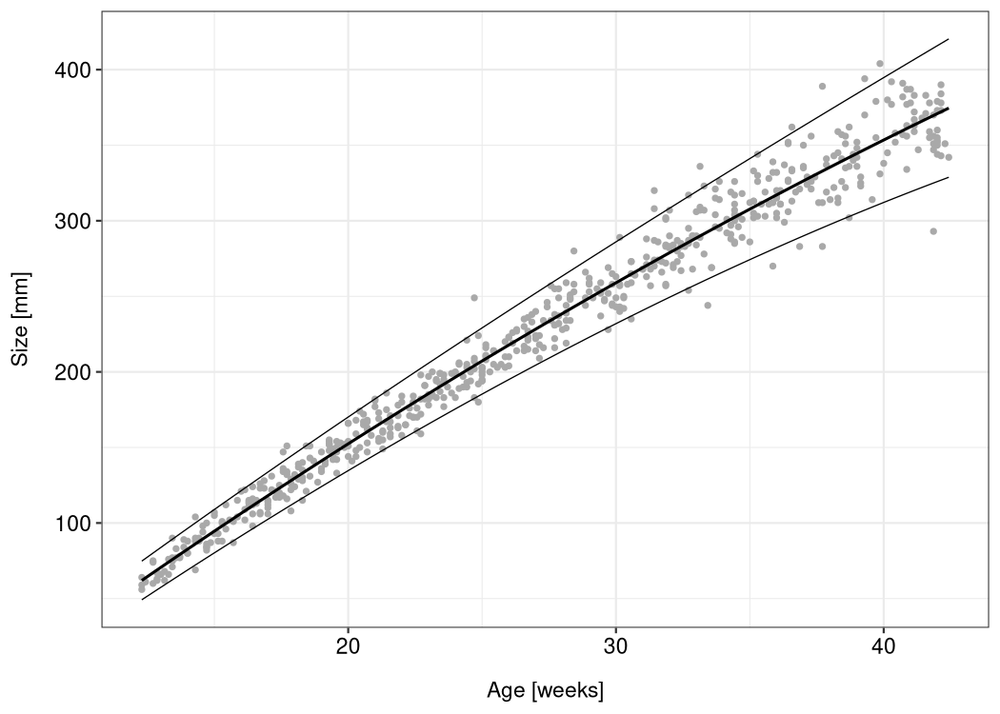

lmls is an R package for working with linear models for location and scale. These models are multi-predictor regression models with explanatory variables for the mean (= the location) and the standard deviation (= the scale) of a normally distributed response variable. They are special cases of generalized additive models for location, scale and shape (GAMLSS), as described by Rigby and Stasinopoulos (2005).
The lmls package provides functions for maximum likelihood and Markov chain Monte Carlo (MCMC) estimation, a parametric bootstrap algorithm, and some diagnostic plots. It was written for the “Advanced Statistical Programming” course at Göttingen University. Feel free to use the package and vignette as an introduction to location-scale regression, or as a basis for the implementation of additional inference algorithms and model extensions.
Installation
You can install the released version of lmls from CRAN with:
install.packages("lmls")Or install the development version from GitHub:
# install.packages("remotes")
remotes::install_github("hriebl/lmls")Example
The lmls package comes with the abdom dataset (which it borrows from the gamlss.data package). The dataset consists of only two variables: the size of 610 fetuses (as measurements of their abdominal circumference taken from ultrasound scans) and their gestational age ranging from 12 to 42 weeks.
To estimate an LMLS with a quadratic effect of the babies’ age on their average size and a linear effect on the log-standard deviation, run this code:
You can now use ggplot2 to visualize the model:
df <- abdom
df$mu <- predict(m, type = "response", predictor = "location")
df$sigma <- predict(m, type = "response", predictor = "scale")
df$upper <- df$mu + 1.96 * df$sigma
df$lower <- df$mu - 1.96 * df$sigma
ggplot(df, aes(x, y)) +
geom_point(color = "darkgray", size = 1) +
geom_line(aes(y = mu), linewidth = 0.7) +
geom_line(aes(y = upper), linewidth = 0.3) +
geom_line(aes(y = lower), linewidth = 0.3) +
xlab("Age [weeks]") +
ylab("Size [mm]")
Vignette
For more details, see the package vignette.